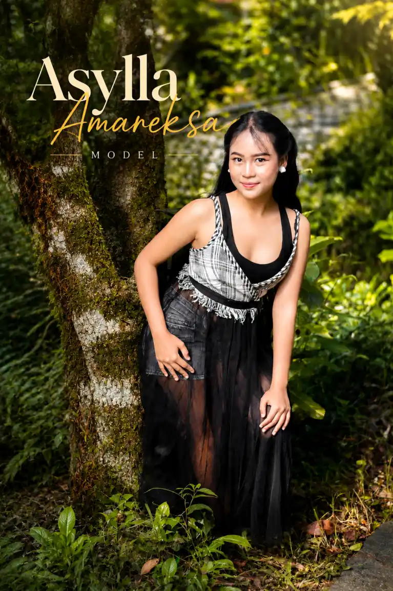

Model Muda Bandung & Talent Event N2SP

Asylla Amareksa merupakan model muda asal Bandung yang mulai aktif di dunia modeling sejak duduk di kelas 4 Sekolah Dasar. Dengan usia yang masih 13 tahun, Asylla telah mengikuti berbagai event fotografi, kegiatan seni, dan project kreatif bersama komunitas maupun sanggar seni.
Nama: Asylla Amareksa
Umur: 13 Tahun
Kota: Bandung
Aktivitas: Model, Talent Event, Seni Tari
Ketertarikan Asylla terhadap dunia modeling dimulai sejak kecil. Berawal dari kegiatan foto dan event komunitas, ia mulai belajar tampil percaya diri di depan kamera serta memahami berbagai konsep pose dan ekspresi.
Seiring waktu, Asylla semakin aktif mengikuti berbagai kegiatan kreatif yang membantunya berkembang sebagai model muda dengan karakter ceria dan ekspresif.
Asylla beberapa kali mengikuti kegiatan fotografi bersama komunitas N2SP (Ngopi Ngopi Sambil Phototoan), di antaranya:
Melalui event-event tersebut, Asylla mendapatkan pengalaman berharga dalam dunia fotografi, bertemu fotografer, model, dan komunitas kreatif lainnya.
Salah satu pencapaian yang pernah diraih oleh Asylla adalah menjadi Juara 3 dalam acara Hyundai yang diadakan di TSM Bandung.
Prestasi tersebut menjadi pengalaman penting yang menambah motivasi dan rasa percaya dirinya untuk terus berkembang di dunia modeling dan seni pertunjukan.
Selain aktif dalam event fotografi, Asylla juga pernah bergabung dalam beberapa project dan sanggar seni, di antaranya:
Pengalaman di bidang seni tari membantu Asylla dalam membangun ekspresi, gerakan, dan penampilan yang lebih natural saat berada di depan kamera maupun di atas panggung.
Melalui Instagram, Asylla membagikan aktivitas modeling, event fotografi, serta perjalanan kreatifnya di dunia seni dan entertainment.
Asylla Amareksa merupakan salah satu talenta muda Bandung yang aktif berkembang di dunia modeling dan seni kreatif. Dengan pengalaman sejak usia dini serta keterlibatan dalam berbagai event dan project seni, Asylla terus menunjukkan semangat belajar dan berkembang di dunia kreatif.